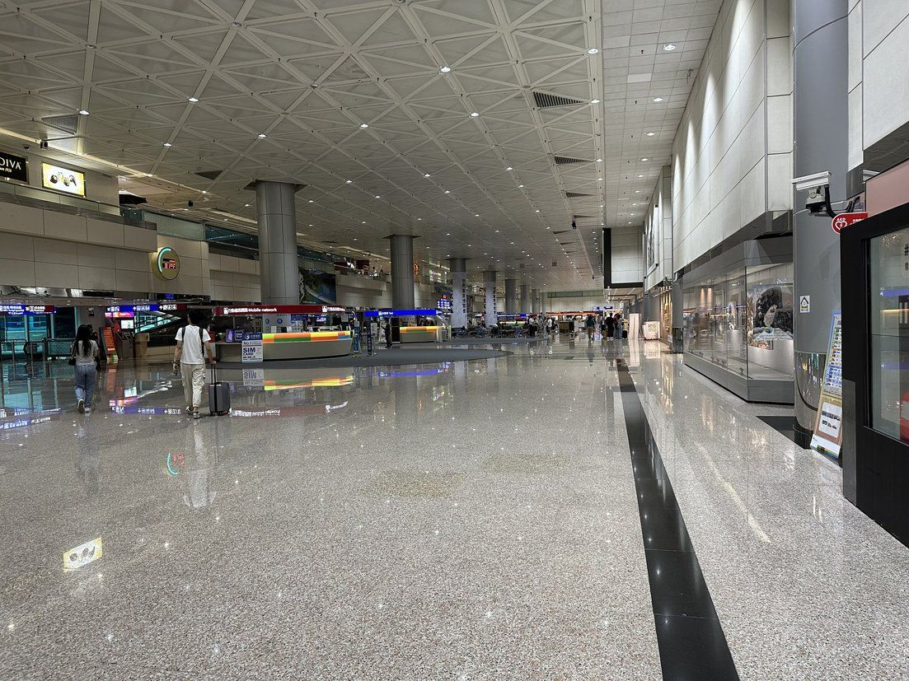

대만 우버 처음 쓸 때, 문자 인증과 공항 픽업은?
인증은 한국에서, 공항에서는 짐을 찾은 뒤에. 순서만 지켜도 덜 헤매요.
게시
대만 우버를 처음 쓴다면 앱 가입과 전화번호 문자 인증은 출국 전 한국에서 끝내 두는 편이 안전해요. 타오위안공항에서는 짐을 찾은 뒤 앱에서 차를 부르고, 앱이 알려 주는 픽업 장소로 가면 됩니다. 캐리어가 3개 이상이면 처음부터 큰 차종을 고르세요.
여행자 커뮤니티에서 자주 나오는 고민을 우버 공식 도움말과 공항 안내 페이지로 확인해 정리해봤어요.
01 · 대만 우버, 출국 전에 할 일 (2026년 11월 기준)
| 항목 | 한국에서 미리 | 대만 도착 후 |
|---|---|---|
| 문자 인증 | 한국 번호로 바로 받을 수 있어요 | 한국 번호 로밍(문자 수신)이 켜져 있어야 받아요 |
| 결제수단 등록 | 앱에서 여유 있게 등록 | 입국장에서 급하게 하게 돼요 |
| 인증 문자가 안 올 때 | 통신사에 바로 문의 가능 | 해외에서는 문의가 번거로워요 |
우버 공식 도움말에 따르면 계정을 만들거나 전화번호를 바꿀 때 문자로 인증 코드가 오고, 해외 번호도 절차는 똑같아요. 다만 지금 있는 곳에서 내 통신사 신호가 잡혀야 한다고 안내합니다. 대만에서 데이터용 이심만 켜 두고 한국 번호를 꺼 두면 인증 문자를 못 받을 수 있으니, 인증은 한국에서 끝내 두는 게 편해요.
02 · 대만 우버 인증 문자가 안 올 때
번호부터 다시 확인 국가번호와 번호가 맞는지 고친 뒤 인증 화면에서 다시 보내기를 눌러요.
통신사에 단축번호 문자 확인 우버는 단축번호 문자로 코드를 보내요. 통신사가 막고 있을 수 있으니 단축번호 문자 수신이 켜져 있는지 문의하고, 해외 발신 문자를 차단해 두지 않았는지도 보세요.
전화로 코드 받기 로그인 화면에서 '코드를 받지 못했어요'를 누르면 문자 재전송이나 전화로 코드 받기를 고를 수 있어요.
휴대폰 재시작 휴대폰을 껐다 켜면 통신망에 다시 붙어 문자가 들어오기도 해요.

03 · 타오위안공항에서 우버 타는 법
우버 공식 TPE 픽업 안내에 따르면 공항에 내린 뒤 앱에서 차를 부르고, 기사가 배정되면 앱의 '픽업 장소 안내'를 따라가면 돼요. 픽업 장소는 차종에 따라 달라질 수 있고, 차량 공유 픽업 구역 표지판을 따라가도 됩니다. 기사를 못 찾으면 앱으로 연락하세요. 여행자 커뮤니티에서는 공항에서 바로 잡기 어려웠다는 의견도 있어, 시간이 빠듯하면 공식 안내 페이지와 앱에서 날짜·시간을 넣어 예약할 수 있는지 미리 확인해 두는 편이 마음 편해요.
캐리어 2개면 UberX 공식 안내에 따르면 UberX는 보통 캐리어 2개, UberXL은 보통 3개가 실려요. 공간은 보장되지 않으니 배정 후 기사에게 앱으로 물어보세요.
큰 짐이 많으면 UberXXL 28인치 큰 캐리어 4개 이상을 실을 수 있는 차종으로 안내돼요. 짐이 다 안 들어가면 취소하고 더 큰 차를 다시 부르라고 안내해요.
요금은 앱 견적으로 요금은 차종, 거리, 시간, 통행료, 수요에 따라 달라져요. 부르기 전에 앱에서 출발지와 도착지를 넣고 확인하세요.
04 · 자주 묻는 질문
한국 번호로 대만 우버를 쓸 수 있나요? 네. 우버 도움말에 따르면 해외 번호도 절차가 같아요. 다만 현지에서 인증 문자를 받으려면 한국 번호 신호가 잡혀야 해요.
인증 문자가 안 오면 어떻게 하나요? 번호를 확인하고 다시 보내기를 눌러 보세요. 그래도 안 오면 전화로 코드 받기를 고르거나 통신사에 단축번호 문자 수신을 문의하세요.
타오위안공항 우버는 어디서 타요? 차를 부른 뒤 앱의 픽업 장소 안내를 따라가요. 차종에 따라 장소가 다를 수 있어요.
새벽에도 우버가 있나요? 우버 공식 안내상 24시간 운영해요. 이른 아침이나 늦은 밤에는 기사가 오기까지 더 오래 걸릴 수 있어요.
일행이 많으면 차를 여러 대 부를 수 있나요? 공식 안내상 계정 하나로 최대 3대까지 부를 수 있어요. 앞 차가 출발한 뒤에 다음 차를 부르는 방식이에요.
공항에 밤늦게 내린다면 타오위안공항 새벽 도착, 시내까지 뭐 타고 갈까도 같이 보세요. 데이터는 현지 이심으로 쓰고 한국 번호는 문자만 받게 두는 방법은 대만 이심 vs 현지 유심에 정리해 두었어요. 타이베이에 도착해 첫 끼를 고른다면 타이베이 맛집 지도와 타이베이 딤섬·만두 맛집에서 찾아보세요. 지도에 있는 八方雲集 중샤오둔화점도 그중 한 곳이에요.
지도에서 타이베이 맛집도 확인해보세요
공항에서 시내로 들어가 먹을 첫 끼를 지도에서 미리 찜해 두세요.